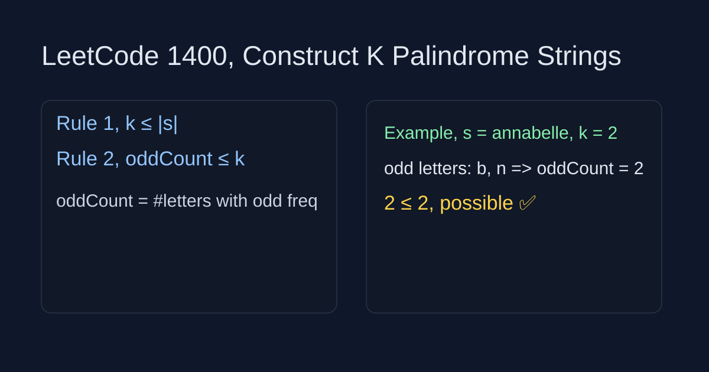

LeetCode 1400: Construct K Palindrome Strings (Odd Count Check)
LeetCode 1400StringGreedyToday we solve LeetCode 1400 - Construct K Palindrome Strings.
Source: https://leetcode.com/problems/construct-k-palindrome-strings/

English
Problem Summary
Given a string s and an integer k, determine whether all characters in s can be rearranged into exactly k non-empty palindrome strings.
Key Insight
Every palindrome can host at most one odd-frequency center. So the number of odd-frequency characters must be at most k. Also we cannot build more than len(s) non-empty strings.
Algorithm
- If k > len(s), return false.
- Count character frequencies and compute oddCount.
- Return oddCount <= k.
Complexity Analysis
Time: O(n), Space: O(1) (26 letters).
Reference Implementations (Java / Go / C++ / Python / JavaScript)
class Solution {
public boolean canConstruct(String s, int k) {
if (k > s.length()) return false;
int[] cnt = new int[26];
for (char c : s.toCharArray()) cnt[c - 'a']++;
int odd = 0;
for (int v : cnt) odd += v % 2;
return odd <= k;
}
}func canConstruct(s string, k int) bool {
if k > len(s) { return false }
cnt := make([]int, 26)
for i := 0; i < len(s); i++ { cnt[s[i]-'a']++ }
odd := 0
for _, v := range cnt { odd += v % 2 }
return odd <= k
}class Solution {
public:
bool canConstruct(string s, int k) {
if (k > (int)s.size()) return false;
int cnt[26] = {0};
for (char c : s) cnt[c - 'a']++;
int odd = 0;
for (int v : cnt) odd += v % 2;
return odd <= k;
}
};class Solution:
def canConstruct(self, s: str, k: int) -> bool:
if k > len(s):
return False
cnt = [0] * 26
for ch in s:
cnt[ord(ch) - ord('a')] += 1
odd = sum(v % 2 for v in cnt)
return odd <= k/**
* @param {string} s
* @param {number} k
* @return {boolean}
*/
var canConstruct = function(s, k) {
if (k > s.length) return false;
const cnt = new Array(26).fill(0);
for (const ch of s) cnt[ch.charCodeAt(0) - 97]++;
let odd = 0;
for (const v of cnt) odd += v % 2;
return odd <= k;
};中文
题目概述
给定字符串 s 和整数 k，判断能否把 s 的所有字符重排成恰好 k 个非空回文串。
核心思路
每个回文串最多容纳一个奇数次字符作为中心，所以奇数字符种类数 oddCount 必须不超过 k。同时 k 不能大于字符串长度。
算法步骤
- 若 k > len(s) 直接返回 false。
- 统计 26 个字母频次并计算奇数频次个数。
- 判断 oddCount <= k。
复杂度分析
时间复杂度：O(n)，空间复杂度：O(1)（字母表固定）。
多语言参考实现（Java / Go / C++ / Python / JavaScript）
class Solution {
public boolean canConstruct(String s, int k) {
if (k > s.length()) return false;
int[] cnt = new int[26];
for (char c : s.toCharArray()) cnt[c - 'a']++;
int odd = 0;
for (int v : cnt) odd += v % 2;
return odd <= k;
}
}func canConstruct(s string, k int) bool {
if k > len(s) { return false }
cnt := make([]int, 26)
for i := 0; i < len(s); i++ { cnt[s[i]-'a']++ }
odd := 0
for _, v := range cnt { odd += v % 2 }
return odd <= k
}class Solution {
public:
bool canConstruct(string s, int k) {
if (k > (int)s.size()) return false;
int cnt[26] = {0};
for (char c : s) cnt[c - 'a']++;
int odd = 0;
for (int v : cnt) odd += v % 2;
return odd <= k;
}
};class Solution:
def canConstruct(self, s: str, k: int) -> bool:
if k > len(s):
return False
cnt = [0] * 26
for ch in s:
cnt[ord(ch) - ord('a')] += 1
odd = sum(v % 2 for v in cnt)
return odd <= k/**
* @param {string} s
* @param {number} k
* @return {boolean}
*/
var canConstruct = function(s, k) {
if (k > s.length) return false;
const cnt = new Array(26).fill(0);
for (const ch of s) cnt[ch.charCodeAt(0) - 97]++;
let odd = 0;
for (const v of cnt) odd += v % 2;
return odd <= k;
};
Comments